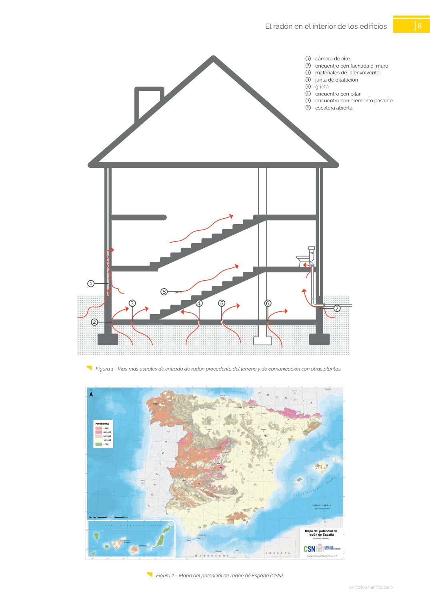

GUIA · de los edificios · versión sin-fecha · capa guia
Formatos: JSON compacto · Markdown · PDF fuente
Ámbito del documento · texto del ámbito · documento y tablas
Tipo: tablas, figuras · nivel 3 · sección estimada: Capítulo El radón en el interior · padre: a0016
de los edificios 1 8 >> volver al índice > El radón en el interior de los edificios 1 cámara de aire 1 cámara de aire

PDF fuente redistribuible: copia fiel enlazada en esta página (SHA256 verificado).